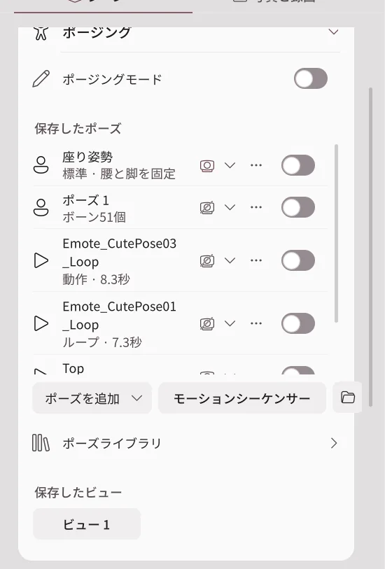
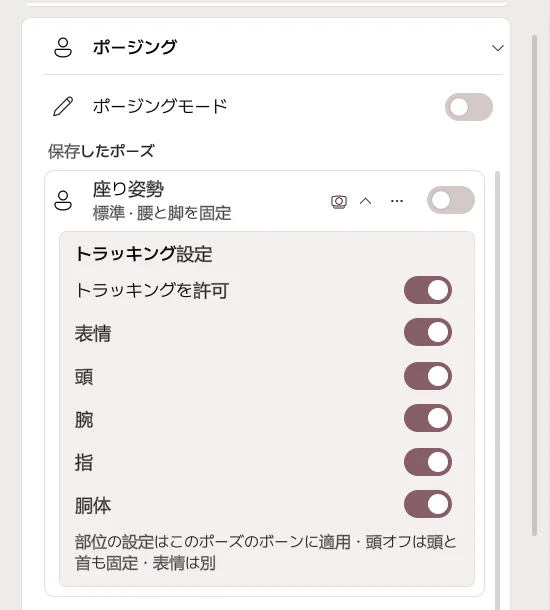
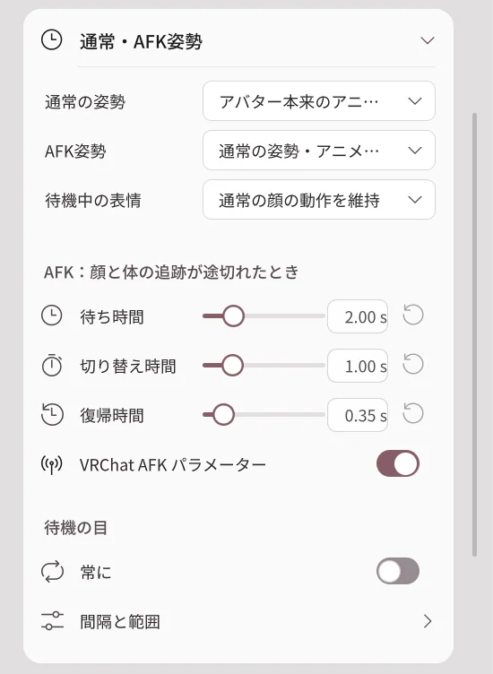
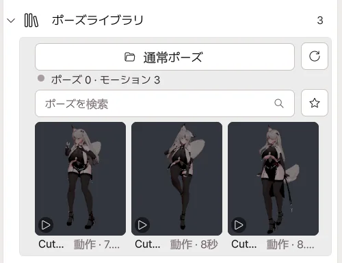
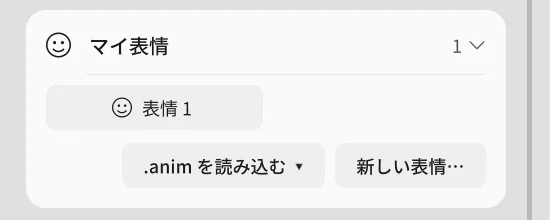
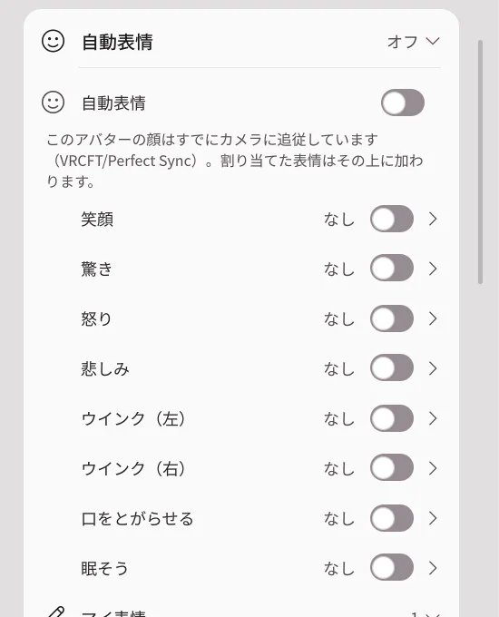

ポージングと表情
保存するポーズを作り、表情をボタンやトラッキング入力に接続します。ポージング・ポーズライブラリ・オブジェクトはProで、マイ表情・自動表情はBasicとProで使用できます。
ポージング

- スタジオ → ポージングでポージングモードをオンにします。
- 骨を選んで回転リングを引くか、手や足を動かします。
- 完了を押して姿勢を保存します。
- アバターメニューの詳細カードで適用します。
| 操作・ボタン | 結果 |
|---|---|
| ボーン選択・回転 | 選択した関節の方向を変えます。 |
| 手・足をドラッグ | 腕や脚がついてくるように終点を移動させます。 |
| Alt+ドラッグ | 肘・膝の向きを変えます。 |
| 対称編集 | 反対側も一緒に変更します。 |
| 左右反転 | ポーズの左右を入れ替えます。 |
| 固定 | 選択した骨をトラッキングとアニメーションで動かせないようにします。 |
| 床に付ける | 足を床に合わせます。 |
| 完了 | 作ったポーズを保存します。 |
| 捨てる | 編集した姿勢を適用せずに出ます。 |
体勢別追跡

姿勢の横のカメラボタンを押すと、顔・頭・腕・指・胴体をそれぞれオン・オフできます。
- 点灯している部分：私の動きに従います。
- 消えた部分: 保存した姿勢を維持します。
- 例：腕を下ろして頭・フェイシャルをオンにすると、腕のポーズを維持しながら、首と表情が動きます。
基本姿勢と待機姿勢

| 選択 | 使用するとき |
|---|---|
| 基本姿勢 | 普段追跡しない部分の基準姿勢です。 |
| AFK 待機姿勢 | 追跡を失ったときに使用する姿勢です。 |
| 待機表情 | AFK中に自動で適用される表情です。 |
| 机の姿勢 | 手がカメラに映らないときに使う腕・手の姿勢です。 |
待機姿勢に移る時間は、動作 → 追跡を失ったときで合わせます。
ポーズライブラリ

- スタジオ → ポージング → ポーズライブラリを開きます。
.animファイルがあるフォルダーを選択します。- ポーズのサムネイルを選んで適用します。
- 解除を押すと戻ります。
検索・お気に入りでよく使うポーズを探し、編集でポージングモードで修正して保存することができます。
オブジェクト
スタジオ → 部屋と小道具で配置方法を確認してください。テキスト・画像・図形と.vprop 3Dモデルを使用できます。
自分の表情

- 「新しい表情を作成」を押します。
- 顔のシェイプキーを動かして表情を作ります。
- プレビューの強さで0%無表情から100%表情まで確認します。
- 保存します。
- 自分の表情タイルを押して適用します。
.anim の読み込みでUnity表情アニメーションを追加することもできます。動くファイルは時間に応じて表情が変わり、繰り返し有無はファイル設定に従います。
自動表情

動作 → 自動表情でオンにします。笑顔・驚き・ウィンクなど検知する表情ごとに、自分の表情で保存した表情を接続します。そうすると、実際に笑ったり驚いたりした時に接続した表情が自動で出ます。